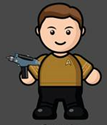
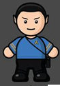
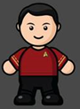
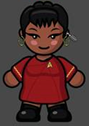

StarRisk AdVenture

💬 Welcome aboard the AUS AdVenture. I am Kork. In this episode you will brainstorm risks for an ICT project. Will my crew survive your project? Working alone, you are to install a network in the AdVenture Space Highschool. You are contracted to install cabling, routers, managed switches, wireless access points, VoIP phones and POE IP security cameras. The following are some common ICT issues. Assess each issue in the context of this project to determine if the risk is lower or higher than usual. If playing alone, just play as Team 1. Assess well, my friend, as our lives are in your hands. As in any project, you will need a little bit of luck!| Issue | Team 1 | Team 2 | Team 3 | Team 4 | ||
|---|---|---|---|---|---|---|
| Schedule flaws | LowerHigher |  |
||||
|
||||||
Images are CC ND NC 3.0 By PixelOz

